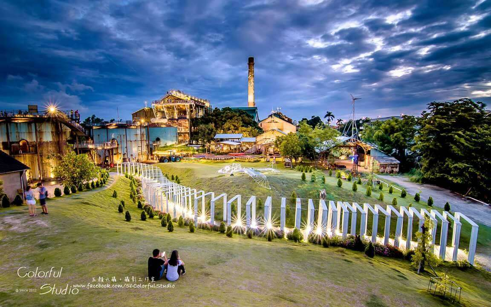

台南熱門旅遊景點
精選 11 個必去之處，開啟您的深度旅程
國定古蹟
赤崁樓
最早由荷蘭人所建，見證了台南數百年的歷史變遷。
中西區

歷史地標
安平古堡
台灣第一座西式城堡，周邊還能漫遊安平老街，品嚐在地小吃。
安平區

藝術殿堂
奇美博物館
以西洋藝術收藏聞名，建築風格典雅，是拍照與欣賞藝術的熱門景點。
仁德區

生態祕境
四草綠色隧道
有「台版亞馬遜」之稱，搭乘竹筏穿梭在紅樹林，享受自然之美。
安南區

在地美食
花園夜市
台南最具代表性的夜市之一，聚集各式小吃，是必訪的美食天堂。
北區

藝術空間
藍晒圖文創園區
結合藝術與文創的拍照景點，色彩繽紛，深受年輕族群與遊客喜愛。
中西區

必吃清單
國華街
台南經典美食街，匯集牛肉湯、碗粿與各式小吃，滿足饕客味蕾。
中西區

美學地標
台南美術館二館
純白幾何堆疊的建築外觀，是全台灣最美的美術館之一。
中西區

懷舊老街
神農街
保留完整的清代街廓，晚上的燈籠亮起時充滿神祕氛圍。
中西區

工業風
十鼓仁糖文創園區
舊糖廠改建，除了震撼的鼓樂表演，還有刺激的極限體驗。
仁德區

浪漫景點
北門水晶教堂
極簡白色建築映照在水面上顯得格外夢幻，是婚紗攝影聖地。
北門區